← 返回阅读库 · 原论文目录
论文讲解阅读文档 · 表征学习 · v200
Nearest-Neighbor Contrastive Learning of Visual Representations[2104.14548
视频时长 00:05:33；讲解文字 2,520 字符；提取讲解画面 35 张。按视频原顺序阅读，每段文字保留时间戳。
文字来自整段视频的自动语音转写，按自然停顿分段，并与 PPT / 论文页面 / 演示画面对齐。未将讲解压缩为摘要；术语、数字和口述公式请结合画面及原论文核对。 阅读稿已校正规范部分明确术语误识别；原始逐字稿和每处修改记录另行保留。
讲解画面为源视频截图（640×360），不是可编辑 PPT 文件。全片按每秒 2 帧扫描内容变化，逐步展开页保留；连续动画保留代表画面。清晰度受源视频限制。
下载完整资料包 · 含离线 HTML、PDF、Word、全部 PPT 画面和字幕。
原论文与材料
With a Little Help from My Friends: Nearest-Neighbor Contrastive Learning of Visual Representations · 下载完整 PDF（17 页）
按时间阅读
00:00:00–00:00:27 · 画面 001
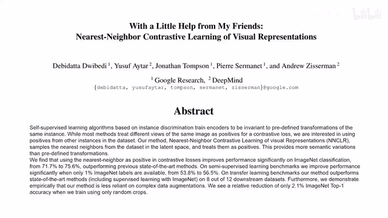
00:00:00–00:00:27 · 画面 001大家好,今天我们来飞速说一篇论文 With a little help from my friends: Nearest-Neighbor Contrastive Learning of Visual Representations 首先这篇论文是一个 idea 非常简单,实验非常充分的文章因此依照节目的惯例,我们还只介绍本文的核心思想然后留下了大部分实验作者的分析供各位感兴趣的朋友去原文仔细查看那么直接来到正题
00:00:27–00:00:35 · 画面 002
00:00:27–00:00:35 · 画面 002本文的核心思想其实非常简单,这个是 SimCLR,一个图像进来,不同的 random augmentation,做完了之后得到两个 view,然后 view 之后得到 encoder argumentation,然后做 contrastive learning,因为你知道虽然这是两个 view,但是它们来自同一张图,它们代表的语义信息应该是一样的,所以它们在 latent space 里面应该是完全相近的。
00:00:35–00:00:36 · 画面 003
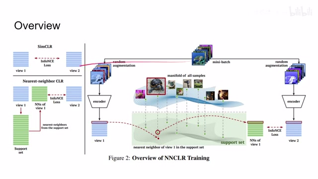
00:00:35–00:00:36 · 画面 00300:00:36–00:00:42 · 画面 004
00:00:36–00:00:42 · 画面 00400:00:42–00:00:43 · 画面 005
00:00:42–00:00:43 · 画面 00500:00:43–00:00:50 · 画面 006
00:00:43–00:00:50 · 画面 00600:00:50–00:00:51 · 画面 007
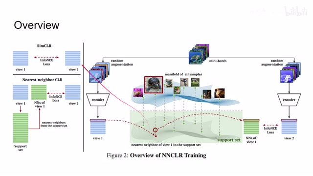
00:00:50–00:00:51 · 画面 007它用的 loss 是 InfoNCE 这个是 SimCLR 如果你对这个不熟悉查看我们以前的视频那么在这里本文的核心思想就是 random augmentation 如果爆了我们直接对比这个 view 它不够给劲怎么办我们在一边得到这个 view 之后我去我之前的内存中这里它叫 support set 我去我之前内存中查说我原来看过这个图像里面哪一个跟现在这个图像最为接近
00:00:51–00:00:58 · 画面 008
00:00:51–00:00:58 · 画面 00800:00:58–00:00:59 · 画面 009
00:00:58–00:00:59 · 画面 00900:00:59–00:01:08 · 画面 010
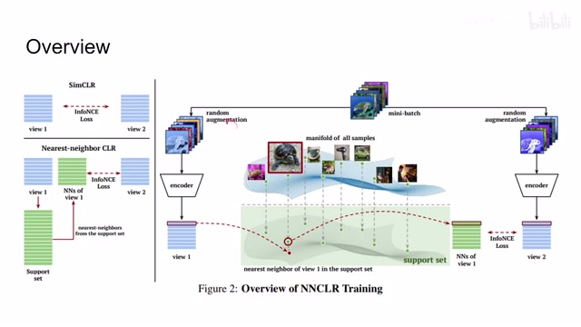
00:00:59–00:01:08 · 画面 01000:01:08–00:01:10 · 画面 011
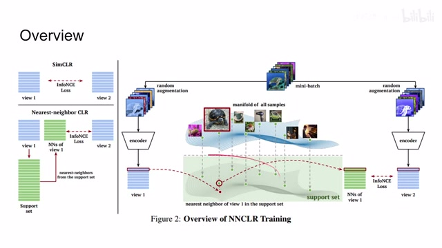
00:01:08–00:01:10 · 画面 01100:01:10–00:01:25 · 画面 012
00:01:10–00:01:25 · 画面 012那找到这个最为接近的图像啊我跟这个另一个 view 做这个 InfoNCE 这样子呢再构成一个 loss 那当然你这里推断出来的 representation 不要扔啊对吧这次训练完了之后扔进这个 support set 里面相当于更新一下我们这个 support set 就这样不断的更新下去啊非常简单的思想那具体来看使用的 loss 呢对吧这里的作者叫这个 NNCLR 他本质上呢是这个 InfoNCE 但是呢我们看了这里的这个 positive sample
00:01:25–00:01:26 · 画面 013
00:01:25–00:01:26 · 画面 01300:01:26–00:01:36 · 画面 014
00:01:26–00:01:36 · 画面 01400:01:36–00:01:50 · 画面 015
00:01:36–00:01:50 · 画面 015用的是这个最近邻这个 zi 呢就是这里的这个 ze 他是左边的这个 view 然后呢求他的最近邻 q 是这个 support set 那最近邻怎么求的呢直接是两个 representation 他们因为在这个 latent space 里面过了 normalization 他们都是单位向量然后呢 L2 distance 就可以了那么当然关于这个 support set q 呢我们这里补充一点细节第一个是 fifo
00:01:50–00:01:51 · 画面 016
00:01:50–00:01:51 · 画面 01600:01:51–00:01:55 · 画面 017
00:01:51–00:01:55 · 画面 01700:01:55–00:01:56 · 画面 018
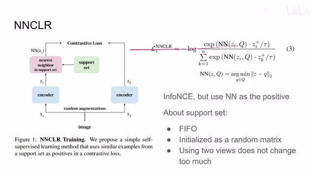
00:01:55–00:01:56 · 画面 01800:01:56–00:02:30 · 画面 019
00:01:56–00:02:30 · 画面 019它是一个先进先出的也就是说你每次推理完之后新的这些 representation 等它所有的训练完之后再塞到这个 support set 里面然后把原来的这些太早的这些 representation 给顶出去了它初始化的时候是一个随机的矩阵然后作者在后面的观察中也发现
00:02:30–00:02:32 · 画面 020
00:02:30–00:02:32 · 画面 02000:02:32–00:02:34 · 画面 021
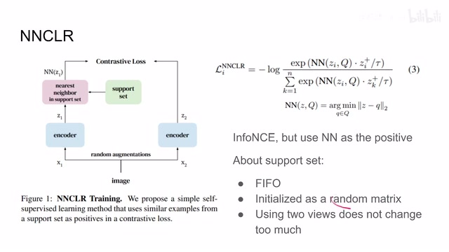
00:02:32–00:02:34 · 画面 02100:02:34–00:02:35 · 画面 022
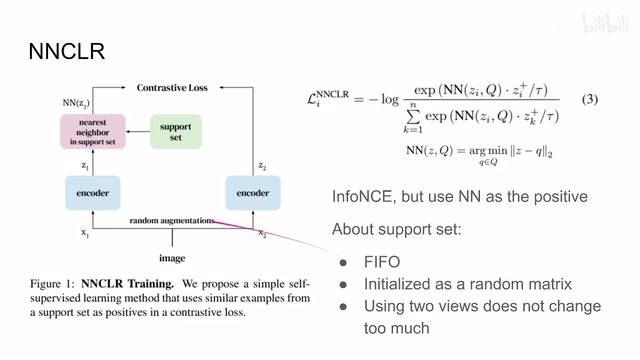
00:02:34–00:02:35 · 画面 022我让这个 support set 包括这两个 view 的这个 representation 还是包括一个 view 的 representation 他们的改善呢并不是很明显好了那么以上就是本文的核心思想了那这个时候呢可能有朋友就会问了啊等一下等一下我书读的多你骗不了我这个最近邻对吧他是不可微分的这玩意不可微分的你咋训练呢
00:02:35–00:02:37 · 画面 023
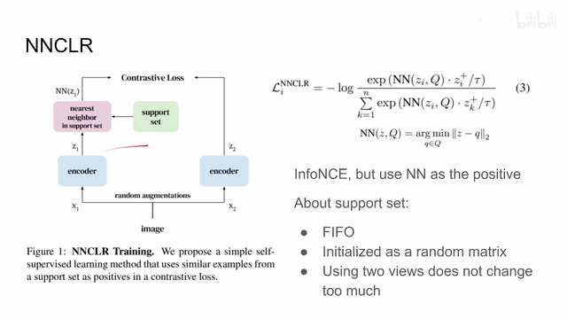
00:02:35–00:02:37 · 画面 02300:02:37–00:02:39 · 画面 024
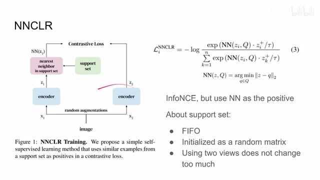
00:02:37–00:02:39 · 画面 02400:02:39–00:02:48 · 画面 025
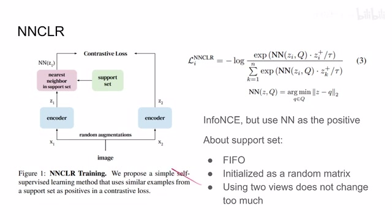
00:02:39–00:02:48 · 画面 02500:02:48–00:02:49 · 画面 026
00:02:48–00:02:49 · 画面 02600:02:49–00:03:03 · 画面 027
00:02:49–00:03:03 · 画面 027这问题其实非常好因为我们知道在训练 SimCLR 的时候因为我们两边的 Encoder 都是一样的它们的权重是相互 share 的反正它们只要有一边把梯度传下去那这个 Encoder 还是能够得到训练的就像老话说的对吧两脚离地了病毒关闭了聪明的智商就又占领高地了你这不俩脚吗对吧这只关闭了一个那一样还是能够训练的那同时还有一些其他的方法像这个 BYOL 啊 SimSiam 这种东西
00:03:03–00:03:04 · 画面 028
00:03:03–00:03:04 · 画面 02800:03:04–00:03:17 · 画面 029
00:03:04–00:03:17 · 画面 02900:03:17–00:03:18 · 画面 030
00:03:17–00:03:18 · 画面 03000:03:18–00:03:41 · 画面 031
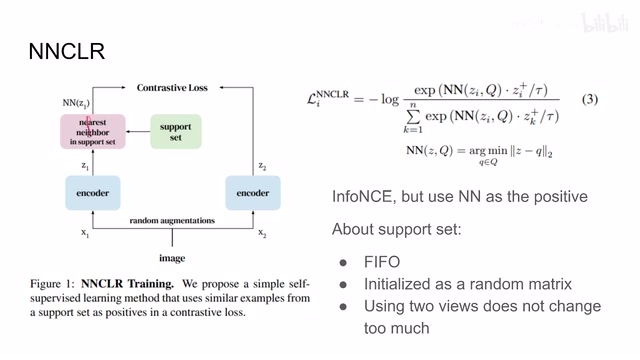
00:03:18–00:03:41 · 画面 031他们在训练的过程中呢还特别要求说你旁边有一只需要这个 stop gradient 他这个设计呢这不刚刚好吗我虽然瞎了但正好外面天黑啊那下面我们来看作者汇报一些结果
00:03:41–00:04:44 · 画面 032
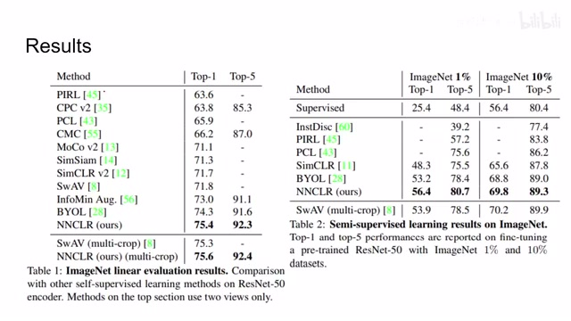
00:03:41–00:04:44 · 画面 032这里我们挑选了一些最主要的结果 Linear Evaluation 在 ImageNet 上面它的结果不如我们上一篇介绍的 Truncated Triplet 好这里它训练了 1000 个 Epochs 还不如人家 800 个能打但是我觉得是相对合理的因为你不太能确定说最近邻就一定是属于你这个 class 的 sample它就一定是 positive sample 但是在 truncated triplet 里面你比较能确定说比如说排到第 5 或者是中位数的那几个 sample 一定是 negative sample 所以这个东西它 work 的没有那么好也是很合理的一件事情同时它确实比我们之前的这些方法有一些改善这是为什么这里我们就推测
这个最近邻的过程呢，其实是帮我们选了一个更加 generalize 的一个 data augmentation 的过程，因为实际上我们是强行把另一张图像的这个 representation 认为成是这张图像的 representation。一方面呢，相当于我们做了更加 generalize 的 data augmentation，在一个 view 上让它显得就是更加具有普世性。但另一方面呢，你选择这个 representation 是来自于另一个 view 的。
00:04:44–00:04:51 · 画面 033
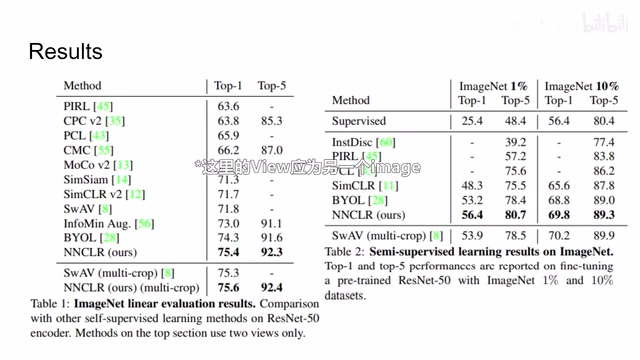
00:04:44–00:04:51 · 画面 033那另一个 view 呢，虽然你也是经过各种 data augmentation，但是它的强度呢又不至于太过离谱，导致说这个 data augmentation 太强，强到连妈都不认识了。所以呢，这是一个很巧妙的方法。同时呢，我们也注意到这个最近邻在 support set 的这个搜索的过程中呢。
00:04:51–00:05:33 · 画面 034
00:04:51–00:05:33 · 画面 034Support set 其实相当于充当了一个 Momentum encoder 的作用，就把过去的 representation 存住了，然后在未来的时刻拿出来训练。你想，其实它的作用跟 Momentum encoder 的作用是差不多的。总的来说，这篇是非常有意思的工作，还是作者在原文中汇报了大量的详细的实验，各种实验的细节非常推荐你去原文查看。好的，以上就是我对这篇论文的一个快速的介绍，感谢您的收看，再见。
00:05:33–00:05:33 · 画面 035
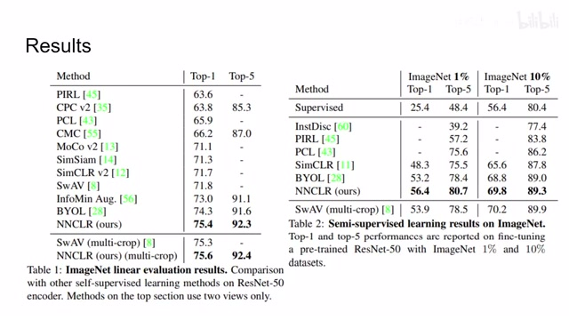
00:05:33–00:05:33 · 画面 035转写与来源说明 · 0 个自动复核提示
保留 14 个原始语音片段，0 个片段触发自动复核提示。提示仅用于定位可能的术语、重复或识别问题，不等于已确认错误。
讲解画面为源视频截图（640×360），不是可编辑 PPT 文件。全片按每秒 2 帧扫描内容变化，逐步展开页保留；连续动画保留代表画面。清晰度受源视频限制。
原视频：paper/合集_2026-10-16_表征学习/[论文速览]Nearest-Neighbor Contrastive Learning of Visual Representations[2104.14548.mp4
SHA-256：4edeb63eefb846a155c4fa40286c96872b28d74d673f0fc37c59766cead09eeb
全文按视频语音与画面制作。原论文可从上方链接下载；完整资料包保留全文、原始逐字稿、字幕和校对记录。